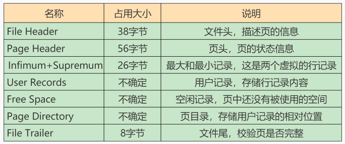
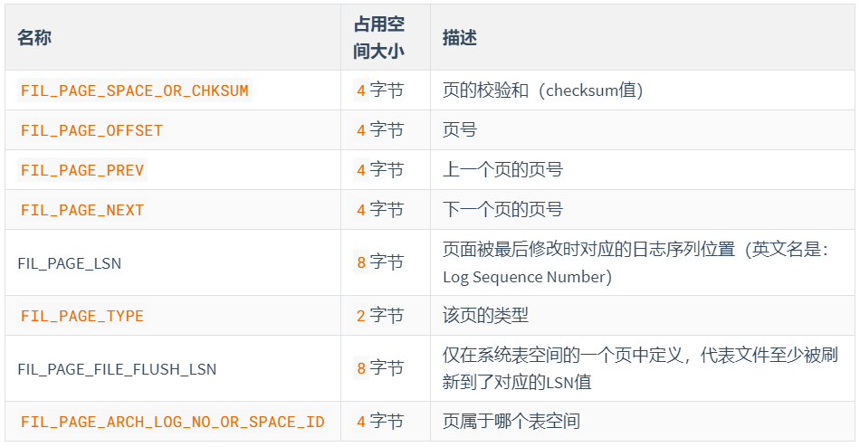
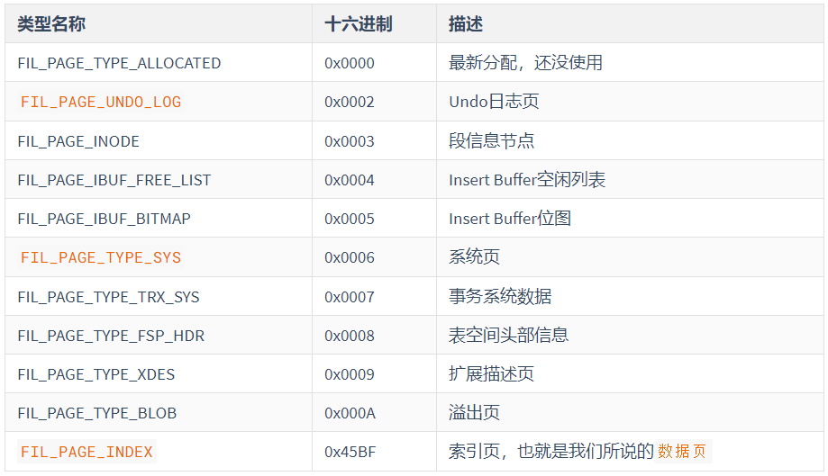

MySQL基本原理
Mysql表类型（存储引擎）的选择
概述
插件式存储引擎是MySQL数据库最重要的特性之一，用户可以根据应用的需要选择如何存储和索引数据、是否使用事务等。MySQL默认支持多种存储引擎，以适用于不同领域的数据库应用需要，用户可以通过选择使用不同的存储引擎提高应用的效率，提供灵活的存储，用户甚至可以按照自己的定制和使用自己的存储引擎，以实现最大程度的可定制性。
MySQL5.0支持的存储引擎包括MyLSAM、InnoDB、BDB、MEMORY、MERGE、EXAMPLE、NDB Cluster、ARCHIVE、CSV、BLACKHOLE、FEDERATED等，其中InnoDB和DBD提供了事务安全表，其他引擎都是非事务安全表。
创建表时如果不指定存储引擎，那么系统就会使用默认存储引擎，MySQL5.5之前的默认存储引擎是MyLSAM，5.5之后改为InnoDB。如果要修改默认的存储引擎，可以在参数中设置default-table-type
各个存储引擎的特点
MyISAM
不支持事务，不支持外键，其优势就是访问速度快，对事务完整性没有要求或者以select、insert为主的应用基本上都可以使用这个引擎来创建表
每个MyISAM在磁盘上存储成3个文件，其文件名都和表名相同，但扩展名分别是：
- .frm（存储表定义）
- .MYD（MYData，存储数据）
- .MYI（MYIndex，存储索引）
数据文件和索引文件可以放置在不同目录，平均分布IO，获得更快的速度
要指定索引文件和数据文件的路径，需要在创建表的时候通过DATA DIRECTORY和INDEX DIRECTORY语句指定，也就是说不同的MyISAM表的索引文件和数据文件可以放置到不同路径下。文件路径需要是绝对路径，并且具有访问权限。
MyISAM类型的表可能是会损坏，原因可能是多种多样的，损坏后的表可能不能被访问，会提示需要修复或者访问返回错误的结果。MyISAM类型的表提供修复工具，可以用CHECK TABLE语句来检查MyISAM表的健康，并用REPAIR TABLE 语句修复一个损坏的MyISAM表，表损坏可能导致数据库异常重新启动，需要尽快修复并尽可能的确认损坏原因，需要尽快修复并确认损坏的原因。
MyISAM的表还支持3中不同的存储格式，分别是：
- 静态（固定长度）表
- 动态表
- 压缩表
其中静态表是默认的存储格式。静态表中的字段都是非变长字段，这样每个记录都是固定的长度的，这种存储方式的优点是存储非常迅速，容易缓存，出现故障容易恢复；缺点是占用的空间通常比动态表多。静态表在存储数据时会按照列的宽度定义补足空格，但是在应用访问的时候并不会得到这些空格，这些空格在返回给应用之前已经去掉。
但是有些要注意的的问题，如果需要保存的内容后面本来有空格，那么返回结果的时候会别去掉。
动态表包含变长字段，记录不是固定的长度，这样存储的有点是占用的空间相对较少，但是频繁的更新和删除记录会产生碎片，需要定期执行OPTIMIZE TABLE语句或者myisamchk-r命令来改善性能，并且在出现故障时恢复相对比较困难
压缩表有由myisampack工具创建，占据非常小的磁盘空间。因为每个记录是被单独压缩的，所有只有非常小的访问开支
InnoDB
InnoDB存储引擎提供了具有提交、回滚和崩溃恢复能力的事务安全。但是对比MyISAM的存储引擎，InnoDB写的处理效率差一些，并且会占用更多的磁盘空间以保留数据和索引。
1、自动增长列
InnoDB，自动增长列必须是索引。如果是组合索引，也必须是组合索引的第一列。但是MyISAM表，自动增长列可以是组合索引的其他列，这样插入记录后，自动增长列是按照组合索引的前面几列进行排序后递增的。
2、外键约束
当某个表的创建了外键参照，那么该表的对应索引或者主键禁止被删除
3、存储方式
InnoDB存储表和索引有两种方式：
- 使用共享表空间存储，这种方式创建的表的表结构保存在.frm文件中，数据和索引保存在innodb_data_home_dir和innodb_data_file_path定义的表空间中，可以是多个文件。
- 使用多表空间存储，这种方式创建的表的结构仍然保存在.frm文件中，但是每个表的数据和索引单独保存在.ibd中，如果是多个分区表，则每个分区对应单独的.ibd文件，文件名是表名+分区名，可以创建分区的时候指定每个分区的数据文件的位置，以此来将表的IO均匀分布在磁盘上。
要使用多表空间的存储方式，需要设置参数innodb_file_pre_table，并且重新启动服务后才可以生效，对于新建的表按照多表空间的方式创建，已有的表仍然使用共享表空间存储。如果将已有的多表空间方式修改回共享表空间方式，则新建表会在共享表空间中创建，但已有的多表空间的表仍然保存原来的访问方式。所以多表空间的参数生效后，只对新建的表生效。
多表空间文件没有大小限制，不需要设置初始大小，也不需要设置文件的最大限制、扩展大小等参数
对于使用多表空间特性的表，可以比较方便地进行单表备份和恢复操作，但是直接复制.ibd文件是不行的，因为没有共享表空间的数据字典信息，直接复制.ibd文件和.frm文件恢复时是不能被正确识别的，但是可以通过以下命令
1 | alter table table_name discard tablespace |
将备份恢复到数据库中，但是这样的单表备份，只能恢复表原来所在的数据库中，而不能恢复到其他数据库中。如果要将单表恢复到目标数据库中，则需要通过mysqldump和mysqlimport来实现
如何选择合适的存储引擎
在选择存储引擎时，应根据应用特点，选择合适的存储引擎，对于复杂的应用系统，还可以根据实际情况选择多种存储引擎进行组合
MyISAM：默认的MySQL插件式存储引擎。如果应用是以读操作或是查操作为主，只有很少的更新和删除操作，并且对事务的完整性、并发性要求 不是很高，那么选择这个存储引擎是合适的。MyISAM是在web、数据仓储和其他仓储和其他应用环境下最常使用的存储引擎之一。
InnoDB：用于事务处理应用程序，支持外键。如果应用对事务的完整性有比较高的要求，在并发条件下要求数据的一致性，数据操作除了插入和查询以外，还包括很多的更新、删除操作，那么InnoDB存储引擎应该是比较合适的选择。InnoDB存储引擎除了有效降低由于删除和更新导致的锁定，还可以确保事务的完整提交和回滚，对于类似计费系统或者财务系统对数据准确性要求比较高的系统，InnoDB是合适的选择。
选择合适的数据类型
CHAR和VARCHAR
CHAR和VARCHAR类型类似，都是用来存储字符串的，但他们保存和检索方式不同。CHAR属于固定长度的字符类型，而VARCHAR属于可变长度的字符类型。
由于CHAR是固定长度的，所以他的处理速度比VARCHAR快得多，但是其缺点是浪费存储空间，程序需要对行尾空格进行处理，所以对于那些长度变化不大并且对查询速度有较高要求的数据可以考虑使用CHAR类型来存储。
随着MySQL版本的不断升级，VARCHAR数据类型的性能也在不断改进并提高，所以在许多的应用中，VARCHAR类型被更多地使用
不同存储引擎使用原则：
MyISAM：建议使用固定长度的数据列代替可变长度的数据列
InnoDB：建议使用VARCHAR类型。对于InnoDB数据表，内部的行存储格式没有区分固定长度和可变长度列（所有数据行都使用指向数据列值得头指针），因此在本质上，使用固定长度的CHAR列不一定比使用可变长度VARCHAR列性能要好。因而，主要的性能因素是数据行使用的存储总量。由于CHAR平均占用的空间多于VARCHAR，因此使用VARCHAR来最小化需要处理数据行的存储总量和磁盘I/O是比较好。
TEXT与BLOB
一般保存少量的字符串的时候，我们会选择CHAR或者VARCHAR；而在保存较大文本时，通常会选择使用TEXT和BLOB；两者区别，BLOB存储二进制数据，TEXT只保存字符数据。
（1）BLOB和TEXT值会引起一些性能问题，特别是在执行了大量的删除操作时
删除操作会在数据表中留下很大的“空洞”，以后填入这些“空洞”的记录在插入的性能上会有影响。为了提高性能，建议定期使用OPTIMIZE TABLE 功能对这类表进行碎片整理，避免因为“空洞”导致性能问题。
（2）使用合成的索引来提高大文本字段的查询性能
合成索引就是根据大文本字段的内容建立一个散列值，并把这个值存储在单独的数据列中，接下来就可以通过检索散列值找到数据行了。但只适用于精准查询。可以使用MD5生成散列值。
（3）在不必要的时候避免检索大型的BLOB或TEXT值
（4）把BLOB或TEXT分离到单独的表中
浮点数和定点数
浮点数一般用于表示含有小数部分的数值。当一个字段被定义为浮点类型后，如果插入数据的精度超过改了定义的实际精度，则插入值会被四舍五入到实际定义的精度值，然后插入，四舍五入过程不会报错。在MySQL中float、double用来表示浮点数。
定点数不同于浮点数，定点数实际上是以字符串形式存放的，所以定点数可以更精确地保存数据。如果实际插入的数值精度大于实际定义的精度，则MySQL会警告（默认的SQLModel下），但是数据按照实际精度四舍五入后插入；如果SQLModel是在TRADITIONAL（传统模式）下，则系统会直接报错，导致数据无法插入。decimal表示定点数。
使用原则：
- 浮点数存在误差
- 对货币等对精度敏感的数据，应该用定点数表示或存储
- 在编程中，如果用到浮点数，要特别注意误差问题，并尽量避免使用浮点数比较
- 要注意浮点数中一些特殊值的处理
日期类型选择
字符集
| 字符集 | 是否定长 | 编码方式 | 其他说明 |
|---|---|---|---|
| ACSII | 是 | 单字节7位编码 | 最早的奠基性字符集 |
| ISO-8859-1/latin1 | 是 | 单字节8位编码 | 西欧字符集，经常被一些程序员用来转码 |
| GB2312-80 | 是 | 双字节编码 | 早起标准，不推荐再使用 |
| GBK | 是 | 双字节编码 | 虽然不是国际，但是支持的系统不少 |
| GB18030 | 否 | 2字节或4字节编码 | 开始有一些支持，但数据库支持的很少见 |
| UTF-32 | 是 | 4字节编码 | UCS-4原始编码，现在很少使用 |
| UCS-2 | 是 | 2字节编码 | Windows2000内部用UCS-2 |
| UTF-16 | 否 | 2字节或4字节编码 | Java和WindowsXP/NT等内部使用UTF-16 |
| UTF-8 | 否 | 1~4字节编码 | 互联网和UNIX/Linux广泛支持的Unicode字符集； MySQLServer也使用 |
怎样选择合适的字符集
- 满足应用支持语言需求，如果应用要处理各种各样的文字，或者将发布到使用不同语言的国家或者地区，就应该选择Unicode字符集。对MySQL来说，目前就是UTF-8。
- 如果应用中涉及已有数据的导入，就要充分考虑数据库字符集对已有数据的兼容性。
- 如果数据库只需要支持一般中文，数据量很大，性能要求也很高，那应该选择双字节定长编码的中文字符集，比如GBK。因为，相对于UTF-8而言，GBK比较小，每个汉字只占2个字节，而UTF-8汉字编码需要3个字节，这样可以减少磁盘I/O、数据库Cache以及网络传输的时间，从而提高性能。相反，如果应用主要处理英文字符，仅有少量汉字数据，那么选择UTF-8更好，因为GBK、UCS-2、UTF-16的西文字符编码都是2字节，会造成很多不必要的开销
- 如果数据库需要做大量字符运算，如比较、排序等，那么选择定长字符集可能更好，因为定长字符集的处理速度要比变长字符集的处理速度快
- 如果所有客户端程序都支持相同的字符集，则应该优先选择该字符集作为数据库的字符集。这样可以避免因字符集转换带来的性能开销和数据损失。
MySQL支持的字符集简介
MySQL服务器可以支持多种字符集，在同一台服务器、同一个数据库甚至同一表的不同字段都可以指定不同的字符集，相比Oracle等其他数据库管理系统，在同一个数据库只能使用相同的字符集，MySQL明显存在更大的灵活性。
MySQL字符集的设置
MySQL的字符集和校对规则有四个级别的默认设置：服务器级、数据库级、表级和字段级。他们分别在不同的地方设置，作用也不相同。
MySQL的字符集包括字符集和校对规则两个概念。其中字符集用来定义MySQL存储字符串的方式，校对规则用来定义比较字符串的方式。字符集和校对规则是一对多关系。
校对规则命名约定：他们以相关的字符集名开始，通常包括一个语言名，并且以 ci（大小写不敏感）、cs（大小写敏感）或bin（二元，即比较是基于字符编码的值而与language无关）结束。
服务器字符集和校对规则
服务器字符集和校对规则，可以再MySQL服务启动的时候确定。
数据库字符集和校对规则
数据库字符集和校对规则在创建数据库的时候指定。如果数据库里已经存在数据，因为修改字符集并不能将已有的数据按照新的字符集进行存放，所以不能通过修改数据库的字符集直接修改数据库的内容。
表字符集和校对规则
连接字符集和校对规则
对于客户端和服务器的交互操作，MySQL提供了3个不同的参数：character_set_client、character_set_connection和character_set_result，分别代表客户端、连接和返回结果的字符集。通常情况下，这3个字符集应该相同的，才可以确保用户写入的数据可以正确的读出。
视图
概念
视图是虚拟存在的表，对于使用视图的用户来说基本上是透明的。视图并不在数据库中实际存在，行和列数据来自定义视图的查询中使用的表，并且是在使用视图时动态生成的。
视图的优势：
- 简单：使用视图的用户完全不需要关心后面对应的表结构、关联条件和筛选条件，对用户来说已经是过滤好的复合条件的结果集
- 安全：使用视图的用户只能访问他们被允许查询的结果集，对表的权限管理并不能限制到某个行某个列，但是可以通过视图就可以简单实现
- 数据独立：一旦视图的结构确定了，可以屏蔽表结构变化对用户的影响，源表增加列对视图没有影响；源表修改列名，则可以通过修改视图来解决，不会造成对访问者的影响
存储过程和函数
含义
存储过程和函数是事先经过编译并存储在数据库的一段SQL语句的集合，调用存储过程和函数可以简化应用开发人员的很多工作，减少数据在数据库和应用服务器之间的传输，对于提高数据处理的效率是有好处的。
存储过程和函数的区别在于函数必须由返回值，而存储过程没有，存储过程的参数可以使用IN、OUT、INOU类型，而函数的参数只能是IN类型的。如果有函数从其他类型的数据库迁移到MySQL，那么就可能因此需要将函数改造成存储过程。
MySQL高级原理
Linux下MySQL的安装与使用
MySQL的数据目录
用户与权限管理
用户管理
登录MySQL服务器
启动MySQL服务后，可以通过mysql命令来登录MySQL服务器，命令如下：
1 | mysql –h hostname|hostIP –P port –u username –p DatabaseName –e "SQL语句" |
下面详细介绍命令中的参数：
- -h参数 后面接主机名或者主机IP，hostname为主机，hostIP为主机IP。
- -P参数 后面接MySQL服务的端口，通过该参数连接到指定的端口。MySQL服务的默认端口是3306，不使用该参数时自动连接到3306端口，port为连接的端口号。
- -u参数 后面接用户名，username为用户名。
- -p参数 会提示输入密码。
- DatabaseName参数 指明登录到哪一个数据库中。如果没有该参数，就会直接登录到MySQL数据库中，然后可以使用USE命令来选择数据库。
- -e参数 后面可以直接加SQL语句。登录MySQL服务器以后即可执行这个SQL语句，然后退出MySQL服务器。
举例：
1 | mysql -uroot -p -hlocalhost -P3306 mysql -e "select host,user from user" |
创建用户
CREATE USER语句的基本语法形式如下：
1 | CREATE USER 用户名 [IDENTIFIED BY '密码'][,用户名 [IDENTIFIED BY '密码']]; |
- 用户名参数表示新建用户的账户，由 用户（User） 和 主机名（Host） 构成；
- “[ ]”表示可选，也就是说，可以指定用户登录时需要密码验证，也可以不指定密码验证，这样用户可以直接登录。不过，不指定密码的方式不安全，不推荐使用。如果指定密码值，这里需要使用IDENTIFIED BY指定明文密码值。
- CREATE USER语句可以同时创建多个用户。
举例：
1 | CREATE USER zhang3 IDENTIFIED BY '123123'; # 默认host是 % |
1 | CREATE USER 'li4'@'localhost' IDENTIFIED BY '123456'; |
修改用户
修改用户名：
1 | UPDATE mysql.user SET USER='li4' WHERE USER='wang5'; |
删除用户
方式1：使用DROP方式删除（推荐）
使用DROP USER语句来删除用户时，必须用于DROP USER权限。DROP USER语句的基本语法形式如下：
1 | DROP USER user[,user]…; |
举例：
1 | DROP USER li4 ; # 默认删除host为%的用户 |
设置当前用户密码
使用ALTER USER命令来修改当前用户密码用户可以使用ALTER命令来修改自身密码，如下语句代表修改当前登录用户的密码。基本语法如下：
1 | ALTER USER USER() IDENTIFIED BY 'new_password'; |
修改其它用户密码
1 | ALTER USER user [IDENTIFIED BY '新密码'] |
权限管理
权限列表
- CREATE和DROP权限 ，可以创建新的数据库和表，或删除（移掉）已有的数据库和表。如果将MySQL数据库中的DROP权限授予某用户，用户就可以删除MySQL访问权限保存的数据库。
- SELECT、INSERT、UPDATE和DELETE权限 允许在一个数据库现有的表上实施操作。
- SELECT权限只有在它们真正从一个表中检索行时才被用到。
- INDEX权限 允许创建或删除索引，INDEX适用于已有的表。如果具有某个表的CREATE权限，就可以在CREATE TABLE语句中包括索引定义。
- ALTER权限可以使用ALTER TABLE来更改表的结构和重新命名表。
- CREATE ROUTINE权限 用来创建保存的程序（函数和程序），ALTER ROUTINE权限用来更改和删除保存的程序， EXECUTE权限 用来执行保存的程序。
- GRANT权限允许授权给其他用户，可用于数据库、表和保存的程序。
- FILE权限 使用户可以使用LOAD DATA INFILE和SELECT … INTO OUTFILE语句读或写服务器上的文件，任何被授予FILE权限的用户都能读或写MySQL服务器上的任何文件（说明用户可以读任何数据库目录下的文件，因为服务器可以访问这些文件）。
授予权限的原则
权限控制主要是出于安全因素，因此需要遵循以下几个经验原则：
- 只授予能满足需要的最小权限，防止用户干坏事。比如用户只是需要查询，那就只给select权限就可以了，不要给用户赋予update、insert或者delete权限。
- 创建用户的时候限制用户的登录主机 ，一般是限制成指定IP或者内网IP段。
- 为每个用户设置满足密码复杂度的密码 。
- 定期清理不需要的用户，回收权限或者删除用户。
授予权限
给用户授权的方式有 2 种，分别是通过把角色赋予用户给用户授权和直接给用户授权 。用户是数据库的使用者，我们可以通过给用户授予访问数据库中资源的权限，来控制使用者对数据库的访问，消除安全隐患。
授权命令：
1 | GRANT 权限1,权限2,…权限n ON 数据库名称.表名称 TO 用户名@用户地址 [IDENTIFIED BY ‘密码口令’]; |
该权限如果发现没有该用户，则会直接新建一个用户。
比如：
- 给li4用户用本地命令行方式，授予atguigudb这个库下的所有表的插删改查的权限。
1 | GRANT SELECT,INSERT,DELETE,UPDATE ON atguigudb.* TO li4@localhost ; |
- 授予通过网络方式登录的joe用户 ，对所有库所有表的全部权限，密码设为123。注意这里唯独不包括grant的权限。
1 | GRANT ALL PRIVILEGES ON *.* TO joe@'%' IDENTIFIED BY '123'; |
1 | 我们在开发应用的时候，经常会遇到一种需求，就是要根据用户的不同，对数据进行横向和纵向的分组。 |
查看权限
- 查看当前用户权限
1 | SHOW GRANTS; |
- 查看某用户的全局权限
1 | SHOW GRANTS FOR 'user'@'主机地址' ; |
收回权限
收回权限就是取消已经赋予用户的某些权限。收回用户不必要的权限可以在一定程度上保证系统的安全性。MySQL中使用 REVOKE语句取消用户的某些权限。使用REVOKE收回权限之后，用户账户的记录将从db、host、tables_priv和columns_priv表中删除，但是用户账户记录仍然在user表中保存（删除user表中的账户记录使用DROP USER语句）。
注意：在将用户账户从user表删除之前，应该收回相应用户的所有权限。
- 收回权限命令
1 | REVOKE 权限1,权限2,…权限n ON 数据库名称.表名称 FROM 用户名@用户地址; |
举例
1 | #收回全库全表的所有权限 |
注意： 须用户重新登录后才能生效
权限表
user表user表是MySQL中最重要的一个权限表， 记录用户账号和权限信息 ，有49个字段。
这些字段可以分成4类，分别是范围列（或用户列）、权限列、安全列和资源控制列。
范围列（或用户列）
host ： 表示连接类型
- % 表示所有远程通过 TCP方式的连接
- IP 地址 如 (192.168.1.2、127.0.0.1) 通过制定ip地址进行的TCP方式的连接
- 机器名 通过制定网络中的机器名进行的TCP方式的连接
- ::1 IPv6的本地ip地址，等同于IPv4的 127.0.0.1
- localhost 本地方式通过命令行方式的连接 ，比如mysql -u xxx -p xxx 方式的连接。
user ： 表示用户名，同一用户通过不同方式链接的权限是不一样的。
password ： 密码
- 所有密码串通过 password(明文字符串) 生成的密文字符串。MySQL 8.0 在用户管理方面增加了角色管理，默认的密码加密方式也做了调整，由之前的 SHA1 改为了 SHA2 ，不可逆 。同时加上 MySQL 5.7 的禁用用户和用户过期的功能，MySQL 在用户管理方面的功能和安全性都较之前版本大大的增强了。
- mysql 5.7 及之后版本的密码保存到 authentication_string 字段中不再使用password 字段。
权限列
- Grant_priv字段：表示是否拥有GRANT权限
- Shutdown_priv字段：表示是否拥有停止MySQL服务的权限
- Super_priv字段：表示是否拥有超级权限
- Execute_priv字段：表示是否拥有EXECUTE权限。拥有EXECUTE权限，可以执行存储过程和函数。
- Select_priv , Insert_priv等：为该用户所拥有的权限。
安全列 安全列只有6个字段，其中两个是ssl相关的（ssl_type、ssl_cipher），用于 加密 ；两个是x509相关的（x509_issuer、x509_subject），用于 标识用户 ；另外两个Plugin字段用于 验证用户身份 的插件，该字段不能为空。如果该字段为空，服务器就使用内建授权验证机制验证用户身份。
资源控制列 资源控制列的字段用来 限制用户使用的资源 ，包含4个字段，分别为：①max_questions，用户每小时允许执行的查询操作次数； ②max_updates，用户每小时允许执行的更新操作次数； ③max_connections，用户每小时允许执行的连接操作次数； ④max_user_connections，用户允许同时建立的连接次数。
查看字段：
1 | DESC mysql.user; |
查看用户, 以列的方式显示数据
1 | SELECT * FROM mysql.user \G; |
查询特定字段：
1 | SELECT host,user,authentication_string,select_priv,insert_priv,drop_priv FROM mysql.user; |
db表
使用DESCRIBE查看db表的基本结构：
1 | DESCRIBE mysql.db; |
1. 用户列 db表用户列有3个字段，分别是Host、User、Db。这3个字段分别表示主机名、用户名和数据库名。表示从某个主机连接某个用户对某个数据库的操作权限，这3个字段的组合构成了db表的主键。
2. 权限列
Create_routine_priv和Alter_routine_priv这两个字段决定用户是否具有创建和修改存储过程的权限。
tables_priv表和columns_priv表
tables_priv表用来 对表设置操作权限 ，columns_priv表用来对表的 某一列设置权限 。
1 | desc mysql.tables_priv; |
tables_priv表有8个字段，分别是Host、Db、User、Table_name、Grantor、Timestamp、Table_priv和Column_priv，各个字段说明如下：
- Host 、 Db 、 User 和 Table_name 四个字段分别表示主机名、数据库名、用户名和表名。
- Grantor表示修改该记录的用户。
- Timestamp表示修改该记录的时间。
- Table_priv 表示对象的操作权限。包括Select、Insert、Update、Delete、Create、Drop、Grant、References、Index和Alter。
- Column_priv字段表示对表中的列的操作权限，包括Select、Insert、Update和References。
procs_priv表
procs_priv表可以对存储过程和存储函数设置操作权限
角色管理
角色的理解
引入角色的目的是 方便管理拥有相同权限的用户 。恰当的权限设定，可以确保数据的安全性，这是至关重要的
创建角色
创建角色使用 CREATE ROLE 语句，语法如下：
1 | CREATE ROLE 'role_name'[@'host_name'] [,'role_name'[@'host_name']]... |
角色名称的命名规则和用户名类似。如果 host_name省略，默认为% ， role_name不可省略 ，不可为空。
给角色赋予权限
创建角色之后，默认这个角色是没有任何权限的，我们需要给角色授权。给角色授权的语法结构是：
1 | GRANT privileges ON table_name TO 'role_name'[@'host_name']; |
上述语句中privileges代表权限的名称，多个权限以逗号隔开。
查看角色的权限
赋予角色权限之后，我们可以通过 SHOW GRANTS 语句，来查看权限是否创建成功了：
1 | mysql> SHOW GRANTS FOR 'manager'; |
只要你创建了一个角色，系统就会自动给你一个“ USAGE ”权限，意思是 连接登录数据库的权限 。代码的最后三行代表了我们给角色“manager”赋予的权限，也就是对商品信息表、盘点表和应付账款表的只读权限。
结果显示，库管角色拥有商品信息表的只读权限和盘点表的增删改查权限。
回收角色的权限
角色授权后，可以对角色的权限进行维护，对权限进行添加或撤销。添加权限使用GRANT语句，与角色授权相同。撤销角色或角色权限使用REVOKE语句。
修改了角色的权限，会影响拥有该角色的账户的权限。
撤销角色权限的SQL语法如下：
1 | REVOKE privileges ON tablename FROM 'rolename'; |
删除角色
当我们需要对业务重新整合的时候，可能就需要对之前创建的角色进行清理，删除一些不会再使用的角色。删除角色的操作很简单，你只要掌握语法结构就行。
1 | DROP ROLE role [,role2]... |
注意， 如果你删除了角色，那么用户也就失去了通过这个角色所获得的所有权限 。
给用户赋予角色
角色创建并授权后，要赋给用户并处于 激活状态 才能发挥作用。给用户添加角色可使用GRANT语句，语法形式如下：
1 | GRANT role [,role2,...] TO user [,user2,...]; |
在上述语句中，role代表角色，user代表用户。可将多个角色同时赋予多个用户，用逗号隔开即可。
激活角色
方式1：使用set default role命令激活角色
方式2：将activate_all_roles_on_login设置为ON
1 | SET GLOBAL activate_all_roles_on_login=ON; |
这条 SQL 语句的意思是，对 所有角色永久激活 。运行这条语句之后，用户才真正拥有了赋予角色的所有权限。
撤销用户的角色
撤销用户角色的SQL语法如下：
1 | REVOKE role FROM user; |
设置强制角色(mandatory role)
方式1：服务启动前设置
1 | [mysqld] |
方式2：运行时设置
1 | SET PERSIST mandatory_roles = 'role1,role2@localhost,r3@%.example.com'; #系统重启后仍然有效 |
逻辑架构
第1层：连接层
系统（客户端）访问 MySQL 服务器前，做的第一件事就是建立 TCP 连接。
经过三次握手建立连接成功后， MySQL 服务器对 TCP 传输过来的账号密码做身份认证、权限获取。
- 用户名或密码不对，会收到一个Access denied for user错误，客户端程序结束执行
- 用户名密码认证通过，会从权限表查出账号拥有的权限与连接关联，之后的权限判断逻辑，都将依赖于此时读到的权限
TCP 连接收到请求后，必须要分配给一个线程专门与这个客户端的交互。所以还会有个线程池，去走后面的流程。每一个连接从线程池中获取线程，省去了创建和销毁线程的开销。
第2层：服务层
SQL Interface: SQL接口
接收用户的SQL命令，并且返回用户需要查询的结果。比如SELECT … FROM就是调用SQLInterface
MySQL支持DML（数据操作语言）、DDL（数据定义语言）、存储过程、视图、触发器、自定义函数等多种SQL语言接口
Parser: 解析器
在解析器中对 SQL 语句进行语法分析、语义分析。将SQL语句分解成数据结构，并将这个结构传递到后续步骤，以后SQL语句的传递和处理就是基于这个结构的。如果在分解构成中遇到错误，那么就说明这个SQL语句是不合理的。
在SQL命令传递到解析器的时候会被解析器验证和解析，并为其创建 语法树 ，并根据数据字典丰富查询语法树，会 验证该客户端是否具有执行该查询的权限 。创建好语法树后，MySQL还会对SQl查询进行语法上的优化，进行查询重写。
Optimizer: 查询优化器
SQL语句在语法解析之后、查询之前会使用查询优化器确定 SQL 语句的执行路径，生成一个执行计划 。
这个执行计划表明应该 使用哪些索引 进行查询（全表检索还是使用索引检索），表之间的连接顺序如何，最后会按照执行计划中的步骤调用存储引擎提供的方法来真正的执行查询，并将查询结果返回给用户。
它使用“ 选取-投影-连接 ”策略进行查询。例如：
1
SELECT id,name FROM student WHERE gender = '女';
这个SELECT查询先根据WHERE语句进行 选取 ，而不是将表全部查询出来以后再进行gender过滤。 这个SELECT查询先根据id和name进行属性 投影 ，而不是将属性全部取出以后再进行过滤，将这两个查询条件 连接 起来生成最终查询结果。
Caches & Buffers： 查询缓存组件
MySQL内部维持着一些Cache和Buffer，比如Query Cache用来缓存一条SELECT语句的执行结果，如果能够在其中找到对应的查询结果，那么就不必再进行查询解析、优化和执行的整个过程了，直接将结果反馈给客户端。
这个缓存机制是由一系列小缓存组成的。比如表缓存，记录缓存，key缓存，权限缓存等 。
这个查询缓存可以在 不同客户端之间共享 。
从MySQL 5.7.20开始，不推荐使用查询缓存，并在 MySQL 8.0中删除 。
第3层：引擎层
插件式存储引擎层（ Storage Engines），真正的负责了MySQL中数据的存储和提取，对物理服务器级别维护的底层数据执行操作，服务器通过API与存储引擎进行通信。不同的存储引擎具有的功能不同，这样我们可以根据自己的实际需要进行选取。
存储层
所有的数据，数据库、表的定义，表的每一行的内容，索引，都是存在 文件系统 上，以 文件 的方式存在的，并完成与存储引擎的交互。当然有些存储引擎比如InnoDB，也支持不使用文件系统直接管理裸设备，但现代文件系统的实现使得这样做没有必要了。在文件系统之下，可以使用本地磁盘，可以使用DAS、NAS、SAN等各种存储系统。
存储引擎
索引的数据结构
索引概述
MySQL官方对索引的定义为：索引（Index）是帮助MySQL高效获取数据的数据结构。
索引的本质：索引是数据结构。你可以简单理解为“排好序的快速查找数据结构”，满足特定查找算法。这些数据结构以某种方式指向数据， 这样就可以在这些数据结构的基础上实现 高级查找算法 。
优点
- 类似大学图书馆建书目索引，提高数据检索的效率，降低 数据库的IO成本 ，这也是创建索引最主要的原因。
- 通过创建唯一索引，可以保证数据库表中每一行 数据的唯一性 。
- 在实现数据的参考完整性方面，可以 加速表和表之间的连接 。换句话说，对于有依赖关系的子表和父表联合查询时，可以提高查询速度。
- 在使用分组和排序子句进行数据查询时，可以显著 减少查询中分组和排序的时间 ，降低了CPU的消耗。
缺点
- 创建索引和维护索引要 耗费时间 ，并且随着数据量的增加，所耗费的时间也会增加。
- 索引需要占 磁盘空间 ，除了数据表占数据空间之外，每一个索引还要占一定的物理空间， 存储在磁盘上 ，如果有大量的索引，索引文件就可能比数据文件更快达到最大文件尺寸。
- 虽然索引大大提高了查询速度，同时却会 降低更新表的速度 。当对表中的数据进行增加、删除和修改的时候，索引也要动态地维护，这样就降低了数据的维护速度。
InnoDB数据存储结构
数据库存储结构：页
磁盘与内存交互的基本单位：页
InnoDB将数据划分为若干个页，InnoDB中页的大小默认为16k。
以页作为磁盘和内存之间交互的基本单位，也就是一次最少从磁盘中读取16k的内容到内存中，一次最少把内存中的16k内容刷新到磁盘中，也就是说，在数据库中，不论读一行，还是读多行，都是将这些所在的页进行加载，也就是说数据库管理存储空间的基本单位是页，数据库I/O操作的最小单位是页，一个页中可以存储多个记录
页的概述
页可以在物理结构上不相连，只要通过双向链表相关联即可，每个数据页中记录会按照主键从小到大组成一个单向链表，每个数据页都会为存储在它里边的记录生成一个页目录，在通过主键查找某记录的时候在页目录中使用二分法快速定位到对应的槽，然后再遍历对应分组中的记录即可快速找到指定的记录。
页的内部结构

File Header（文件头部）（38字节）

FIL_PAGE_OFFSET（4字节）、
每一个页都有一个单独的页号，就跟你的身份证号码一样，InnoDB通过页号可以唯一定位一个页。
FIL_PAGE_OFFSET（4字节）

FIL_PAGE_PREV（4字节）和FIL_PAGE_NEXT（4字节）
FIL_PAGE_SPACE_OR_CHKSUM（4字节）
FIL_PAGE_LSN（8字节）